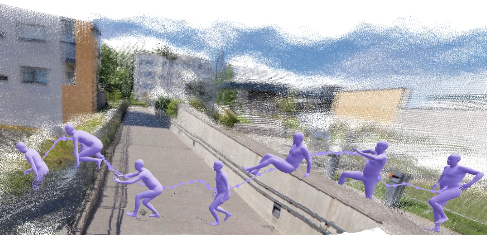

Body-Aligned Metric Calibration
Metric body anchors query nearby scene evidence. Their predictions calibrate scene depth and camera translation to a shared metric reference across the video.
Research project · supplementary visualizations
Implicit Interaction Grounding for Dynamic Human–Scene Reconstruction
From a monocular video, reconstruct human motion and the surrounding scene in one shared metric world.

Qualitative results / 01
Choose an image thumbnail to view the input video alongside Human3R, UniSH, and GroundedHuman. Each panel opens at full size.
01 / 05
Single-person · outdoor scene
Loading supplementary videos…
The approach / 02
Human geometry guides where scene evidence is gathered. The resulting relationship informs both metric calibration and body placement.
Metric body anchors query nearby scene evidence. Their predictions calibrate scene depth and camera translation to a shared metric reference across the video.
Body regions gather local surface and wider scene context, then refine the person’s global position while preserving pose and shape.
Selected figures / 03
The manuscript shows reconstructed bodies within scenes and compares how methods position a body relative to nearby surfaces.
About the work / 04
Capturing human motion and surroundings from monocular video requires both temporally coherent reconstruction and plausible human–scene alignment. GroundedHuman is a feed-forward framework that reconstructs human motion, scene geometry, and camera motion in a shared metric world.
The body determines where to inspect scene geometry. Body-aligned scene attention calibrates the scene with metric human observations, while hierarchical interaction grounding refines human positioning using surrounding scene context. The goal is coherent reconstruction with fewer floating and penetration artifacts.
Comparison videos correspond to the five cases in the supplied supplementary PDF. The method and result figures come from the GroundedHuman v3 manuscript.